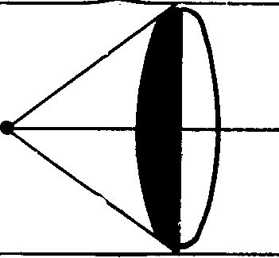

5. Столкновение теории с фактами
Ни одна теория никогда, не согласуется со всеми известными в своей области фактами, однако не всегда следует порицать ее за это. Факты формируются прежней идеологией, и столкновение теории с фактами может быть показателем прогресса и первой попыткой обнаружить принципы, неявно содержащиеся в привычных понятиях наблюдения
Рассмотрение того, как создаются, разрабатываются и используются теории, несовместимые не только с другими теориями, но даже и с экспериментами, фактами и наблюдениями, мы можем начать с указания на то, что ни одна теория никогда не согласуется со всеми известными в своей области фактами. И это не слухи и не результат небрежности. Такая несовместимость порождаются экспериментами и измерениями самой высокой точности и надежности.
Здесь следует провести различие между двумя разными видами расхождения между теорией и фактами: количественным и качественным.
Случай расхождения первого вида хорошо известен: из теории делают некоторое количественное предсказание, и реально полученное значение отличается от предсказанного на величину, выходящую за пределы возможной ошибки. Обычно здесь используются точные инструменты. Наука изобилует количественными расхождениями. Они порождают тот “океан аномалий”, который окружает каждую отдельную теорию[1].
Так, во времена Галилея коперниканское учение было настолько явно и очевидно несовместимо с фактами, что Галилей был вынужден назвать его несомненно ложным[2]. “Нет пределов моему изумлению тому, — пишет он в более поздней работе, — как мог разум Аристарха и Коперника произвести такое насилие над их чувствами, чтобы вопреки последним восторжествовать и убедить”[3]. Ньютоновская теория гравитации с самого начала столкнулась с трудностями, достаточно серьезными для того, чтобы обеспечить материал для ее опровержения. Даже в наши дни в нерелятивистской области “существует огромное число расхождений между наблюдением и теорией”[4]. Созданная Бором модель атома была введена и сохранена, несмотря на ясные и точные свидетельства, противоречившие ей[5]. Специальная теория относительности была сохранена, несмотря на недвусмысленные экспериментальные результату В. Кауфмана 1906 г. и опровержение Д. К. Миллера (я говорю об опровержении потому, что с точки зрения свидетельств того времени этот эксперимент был выполнен по крайней мере столь же хорошо, как и более ранние эксперименты А. Майкельсона и Э. В. Морли)[6]. Общая теория относительности, поразительно успешная в некоторых областях (см., однако, ниже), не может объяснить 10" в движении узловых точек орбиты Венеры и более чем 5" в движении узловых точек орбиты Марса[7]. Наряду с этим теперь вновь возникают сомнения относительно того, можно ли доверять новым вычислениям движения Меркурия, проведенным Диком и др.[8] Все это количественные трудности, которые можно преодолеть посредством вывода новых числовых величин. Но они не заставят нас внести качественных улучшений[9].
Второй случай — качественные недостатки — менее известен, но представляет гораздо больший интерес. В этом случае теория несовместима не с каким-то малопонятным фактом, который известен лишь специалистам и может быть обнаружен с помощью сложной техники, а с обстоятельствами, которые легко заметить и которые известны каждому.
Первый и, по моему мнению, наиболее важный пример несовместимости этого рода дала теория Парменида о едином и неизменном бытии, которая противоречила почти всему, что мы знаем и воспринимаем. В пользу этой теории говорит многое[10], и некоторую роль она играет даже в наши дни, например в общей теории относительности. Зачатки этой теории встречаются еще у Анаксимандра. Впоследствии она была возрождена В. Гейзенбергом[11] в его теории элементарных частиц, согласно которой фундаментальная субстанция или фундаментальные элементы универсума не могут подчиняться тем же законам, которым подчиняются воспринимаемые элементы. Теория Парменида была подтверждена аргументами Зенона, который указал на трудности, присущие идее континуума, состоящего из изолированных элементов. Аристотель внимательно изучил эти аргументы и разработал собственную теорию континуума[12]. Тем не менее понятие континуума как совокупности элементов сохранялось и продолжало использоваться, несмотря на очевидные трудности, пока наконец эти трудности не были почти целиком преодолены в начале XX столетия[13].
Другим примером теории с качественными недостатками является теория оптических цветов Ньютона. Согласно этой теории, свет состоит из лучей различной преломляемости, которые могут быть разделены, воссоединены, подвергнуты преломлению, однако они никогда не изменяют своего внутреннего строения и обладают чрезвычайно малым пространственным сечением. Если считать, что поверхность зеркала является гораздо более грубой, чем поперечное сечение лучей, то теория лучей оказывается несовместимой с существованием зеркальных отображений (что признавал уже сам Ньютон): если свет состоит из лучей, то зеркало должно вести себя подобно грубой поверхности, т. е. должно представляться нам стеной. Ньютон спас свою теорию, устранив эту трудность с помощью гипотезы ad hoc: “Отражение луча производится не одной точкой отражающего тела, но некоторой силой тела, равномерно рассеянной по всей его поверхности”[14].
В данном случае качественное расхождение между теорией и фактом было устранено посредством гипотезы ad hoc. В других случаях не используется даже этот сомнительный маневр: теорию сохраняют и стараются просто забыть о ее недостатках. Примером такого рода может служить отношение к правилу Кеплера, согласно которому объект, рассматриваемый через линзу, воспринимается в точке пересечения лучей, идущих от линзы к глазу[15]. Из этого правила следует, что объект, помещенный в фокусе, будет казаться бесконечно удаленным.

Рис. 1
“Однако, напротив, — писал И. Барроу, учитель и предшественник Ньютона в Кембридже, комментируя это предсказание, — эксперимент убеждает нас в том, что [точка, помещенная недалеко от фокуса], кажется находящейся на различных расстояниях в зависимости от того, как расположен глаз наблюдателя... И она почти никогда не кажется находящейся дальше, чем мы видим ее невооруженным глазом, более того, иногда она представляется даже гораздо ближе... Все это как будто несовместимо с нашими принципами, однако, — продолжает Барроу, — ни эта, ни любая другая трудность не заставит меня отказаться от того, что, как мне известно, согласуется с разумом”[16].
Упоминая о качественных трудностях, И. Барроу заявляет, что он, тем не менее, будет сохранять теорию. Это необычно. Обычный способ действий заключается в том, чтобы вообще забыть о трудностях, никогда не говорить о них и поступать так, как если бы теория с ними не сталкивалась. Такой образ действий весьма распространен в наши дни.

Рис. 2
Согласно классической электродинамике Максвелла и Лоренца, движение свободной частицы является самоускоренным[17]. Рассматривая внутреннюю энергию электрона, получают расходящиеся выражения для точечных зарядов, в то же время заряды конечной области можно привести в соответствие с принципом относительности только посредством добавления непроверяемых напряжений и давлений внутри электрона[18]. Эта проблема вновь возникает в квантовой теории, хотя здесь она отчасти разрешается с помощью “перенормировки”. Последняя заключается в вычеркивании результатов определенных вычислений и замене их некоторым описанием того, что в действительности наблюдалось. Таким образом, неявно принимают, что теория находится в затруднительном положении, но в то же время она формулируется так, как если бы был открыт некоторый новый принцип[19]. Поэтому нет ничего удивительного, когда у философски неискушенных авторов складывается впечатление, что “все свидетельства с беспощадной определенностью указывают на то... [что] все процессы, включая... неизвестные взаимодействия, согласуются с фундаментальным квантовым законом”[20].
Весьма поучителен другой пример из современной физики, так как он мог бы привести к совершенно иному развитию нашего познания микрокосмоса. П. Эренфест доказал теорему, согласно которой классическая электронная теория Г. А. Лоренца в соединении с принципом четности исключает индуцированный магнетизм[21]. Его основания чрезвычайно просты: согласно принципу четности, вероятность некоторого данного движения пропорциональна ехр(—U/RT), где U — энергия движения. Энергия электрона, движущегося в постоянном магнитном поле В, согласно Лоренцу, определяется равенством: U=Q(E+VB), в котором Q есть заряд движущейся частицы, V — ее скорость и Е — величина напряженности электрического поля. Величина энергии во всех случаях свидится к QEV, если не допускать существования одиночных магнитных полюсов. (В соответствующем контексте этот результат серьезно поддерживает идеи и экспериментальные находки покойного Ф. Эренхафта (см. прим. 5 к гл. 3).)
Порой просто невозможно рассмотреть все интересные следствия теории и благодаря этому обнаружить абсурдные результаты, к которым она приводит. Это может быть обусловлено несовершенством существующих математических методов, а также невежеством сторонников этой теории. При таких обстоятельствах наиболее распространенный способ действий заключается в том, чтобы до определенных пределов (которые часто оказываются совершенно произвольными) использовать старую теорию, а новой пользоваться для вычисления различных тонкостей. С точки зрения методологии такого рода деятельность представляется поистине кошмарной. Поясним ее на примере релятивистского вычисления движения Меркурия.
Перигелий Меркурия за столетие смещается приблизительно на 5600". Из этой величины 5025" представляют собой геометрическое смещение, связанное с движением системы отсчета, а 575" оказываются динамическим смещением, обусловленным возмущениями Солнечной системы. Все эти возмущения объясняются классической механикой, за исключением знаменитого числа 43". Таково обычное объяснение сложившейся ситуации.
Из этого объяснения следует, что посылки, из которых мы выводим 43", образуются не общей теорией относительности и соответствующими начальными условиями. Они включают в себя классическую физику, к которой добавляются требуемые релятивистские допущения. Кроме того, релятивистский расчет, так называемое “решение Шварцшильда”, вообще не имеет дела с реально существующей планетной системой (а значит, с нашей асимметричной Галактикой); он относится к совершенно нереальному случаю центрально-симметричного универсума, содержащего сингулярность только в центре. На каком же основании используется столь странная совокупность посылок?
Распространенный ответ гласит, что причина заключается в том, что мы имеем дело с аппроксимациями. Нельзя отказаться от формул классической физики, так как теория относительности неполна. Приходится использовать случай центральной симметрии, ибо теория относительности не предлагает нам ничего лучшего. И первое и второе вытекает из общей теории относительности при специальных обстоятельствах, реализуемых в нашей планетной системе при условии, что мы пренебрегаем некоторыми малыми величинами. Следовательно, мы всецело используем теорию относительности и делаем это адекватным образом.
Следует отметить, в какой степени эта идея аппроксимации незаконна. Обычно дело обстоит так: у нас имеется некоторая теория, и мы способны рассчитать интересующий нас частный случай; когда мы замечаем, что наш расчет приводит к величинам, отличным от тех, которые получались в эксперименте, мы опускаем такие величины и получаем чрезвычайно упрощенный формализм. В рассматриваемом же случае осуществление требуемых аппроксимаций означало бы полный релятивистский расчет проблемы n тел (включая долговременные резонансы между различными планетными орбитами), устранение величин, фиксация которых превосходит точность наблюдений, и доказательство того, что урезанная таким образом теория совпадает с классической небесной механикой, усовершенствованной Шварцшильдом. Эта процедура никем еще не была использована только потому, что релятивистская проблема n тел все еще не решена. Не существует даже аппроксимативных решений :для такой, например, важной проблемы, как проблема стабильности (которая была одним из первых известных камней преткновения для теории Ньютона). Поэтому классическая часть эксплананса вводится не для удобства — она абсолютно необходима. И аппроксимации появляются не как результат релятивистских вычислений, а для того, чтобы сделать относительность применимой. Вполне справедливо назвать их аппроксимациями ad hoc.
В современной математической физике полно аппроксимаций ad hoc. Они играют весьма существенную роль в квантовой теории поля и являются важной составной частью принципа соответствия. Сейчас нас интересуют не причины этого факта, а только его следствия: аппроксимации ad hoc скрывают или даже вовсе устраняют качественные трудности. Они создают ложное впечатление превосходства нашей науки. Отсюда следует, что философ, стремящийся исследовать адекватность науки в качестве описания мира или пытающийся создать реалистическую научную методологию, должен отнестись к современной науке с большой осторожностью. В большинстве случаев современная наука гораздо более глупа и обманчива, чем даже наука XVI—XVII вв.
В качестве заключительного примера качественных трудностей я вновь укажу на гелиоцентрическую теорию времен Галилея. Ниже я постараюсь показать, что эта теория была неадекватна и количественно, и качественно, а также была абсурдна с философской точки зрения.
Подведем итог этого краткого и весьма неполного перечня: если мы обладаем хотя бы небольшим терпением и без предубеждения относимся к свидетельствам, то мы увидим, что научные теории неспособны адекватно воспроизвести определенные количественные результаты и удивительно беспомощны качественно. Хотя наука дает нам теории поразительной красоты и сложности, а современная наука разработала математические структуры, которые по своей стройности и общности превосходят все созданное ранее, однако для достижения этого чуда все существующие трудности были оттеснены в область отношений между теорией и фактами[22] и скрыты посредством аппроксимаций ad hoc и других аналогичных процедур.
В какой степени может помочь нам то методологическое требование, согласно которому теорию следует оценивать с точки зрения эксперимента и, если она противоречит принятым базисным высказываниям, она должна быть отвергнута? Какую позицию мы должны занять по отношению к различным теориям подтверждения и подкрепления, которые опираются на допущение, согласно которому можно добиться полного согласования теории с известными фактами и использовать степень этого согласования в качестве принципа оценки теории? Это требование и все эти теории подтверждения теперь представляются совершенно бесполезными. Они столь же бесполезны, как бесполезна медицина, которая берется лечить пациента лишь в том случае, если он здоров. На практике этим требованиям никто и никогда не подчиняется. Методологи могут указывать на важность фальсификаций — однако они спокойно пользуются опровергнутыми теориями. Они могут читать проповедь о том, как важно принимать во внимание все относящиеся к делу свидетельства, — и в то же время никогда не вспоминать о значительных и серьезных фактах, показывающих, что теории, которые приводят их в восхищение, подобно теории относительности или квантовой теории, столь же плохи, как и отвергнутые ими теории. На практике методологи рабски вторят последним решениям той клики, которая одержала верх в физике, хотя при этом они вынуждены нарушать фундаментальные правила своего ремесла. Можно ли действовать более разумно? Посмотрим![23]
Согласно мнению Д. Юма, теории не могут быть выведены из фактов. А поскольку требование принимать лишь такие теории, которые следуют из фактов, оставляет нас вообще без теорий, поскольку известная нам наука может существовать только в том случае, если мы отбросим это требование и пересмотрим нашу методологию.
Наши результаты говорят о том, что едва ли какая-либо теория вполне совместима с фактами. Требование принимать лишь такие теории, которые совместимы с известными и признанными фактами, вновь лишает нас каких-либо теорий. (Повторяю: лишает всяких теорий, так как нет ни одной теории, которая не испытывала бы тех или иных трудностей.) Следовательно, известная нам наука может существовать только в том случае, если мы отбрасываем и это требование и опять-таки пересматриваем нашу методологию, разрешая контриндукцию наряду с необоснованными гипотезами. Правильный метод не должен включать в себя каких-либо правил, вынуждающих нас осуществлять выбор теорий на основе фальсификации. Скорее его правила должны позволять нам осуществлять выбор теорий, которые были проверены и уже фальсифицированы.
Пойдем дальше. Факты и теории не только постоянно расходятся между собой, они никогда четко и не отделены друг от друга. Методологические правила говорят о “теориях”, “наблюдениях” и “экспериментальных результатах” так, как если бы это были четко выделенные и хорошо определенные объекты, свойства которых легко оценить и которые одинаково понимаются всеми учеными.
Однако тот материал, который реально находится в распоряжении ученого, — его законы, экспериментальные результаты, математический аппарат, его эпистемологические предубеждения, его отношение к абсурдным следствиям принимаемых им теорий — во многих случаях является неопределенным, двусмысленным и он никогда полностью не отделен от своей исторической основы. Этот материал всегда пронизан принципами, которые, ученому неизвестны, а если известны, то их чрезвычайно трудно проверить. Сомнительные идеи относительно познавательных способностей человека, в частности мысль о том, что наши чувства в нормальных обстоятельствах дают надежную информацию о мире, могут вторгаться даже в язык наблюдения, влияя на формирование терминов наблюдения и на различие между подлинными и иллюзорными явлениями. В результате этого язык наблюдения может оказаться привязанным к устаревшим теориям, которые этим окольным путем оказывают влияние даже на самую прогрессивную методологию. (Пример: структура абсолютного пространства—времени классической физики, которая была узаконена и освящена Кантом.) Даже наиболее простые чувственные впечатления всегда содержат в себе некоторый компонент, выражающий физиологическую реакцию воспринимающего организма и не имеющий объективного коррелята. Этот “субъективный” компонент часто сливается с остальными и образует с ними единое целое, которое можно разложить только извне, с помощью контриндуктивных процедур. (Примером этого может служить образ неподвижной звезды, создаваемый невооруженным глазом, — образ, включающий в себя субъективные эффекты иррадиации, дифракции, диффузии, ограничиваемые вторичным торможением соседних элементов сетчатки.) И наконец имеются вспомогательные посылки, необходимые для вывода проверяемых следствий и порой образующие целые вспомогательные науки.
Рассмотрим коперниканскую гипотезу, изобретение, защита и частичное оправдание которой противоречат почти каждому методологическому правилу, о соблюдении которого мы заботимся сегодня. В данном случае вспомогательные науки содержали законы, описывающие свойства и влияние земной атмосферы (метеорология), оптические законы, относящиеся к структуре глаза и телескопов, а также к поведению света, и, наконец, динамические законы, описывающие движение в движущихся системах. Однако наиболее важными были вспомогательные науки, включавшие в себя такую теорию познания, которая постулировала существование определенного простого отношения между восприятиями и физическими объектами. Отнюдь не все эти вспомогательные дисциплины были выражены в явной форме. Содержание многих из них входило в язык наблюдения и создавало именно ту ситуацию, которая была описана в начале предыдущего абзаца.
Рассмотрение всех этих обстоятельств, терминов наблюдения, чувственных впечатлений, вспомогательных наук, основ рассуждений приводит к мысли о том, что теория может оказаться несовместимой со свидетельством не потому, что она некорректна, а потому, что свидетельство теоретически испорчено. Теория оказывается под угрозой вследствие того, что свидетельство либо содержит неанализируемые впечатления, которые лишь отчасти соответствуют внешним процессам, либо выражено в терминах устаревших воззрений, либо оценивается с помощью отставших в своем развитии вспомогательных наук. Теория Коперника была подвергнута сомнению по всем этим причинам.
Именно историко-физиологический характер свидетельства, тот факт, что оно не только описывает некоторое объективное положение дел, но выражает также те или иные субъективные, мифологические и давно забытые мнения относительно этого положения дел, заставляет нас принять новый взгляд на методологию. Это показывает также, что чрезвычайно неблагоразумно позволять свидетельствам прямо и безоговорочно судить наши теории. Прямолинейная и категоричная оценка теорий “фактами” вынуждена устранять некоторые идеи просто потому, что их нельзя включить в структуру устаревшей космологии. Считая экспериментальные результаты и наблюдения несомненными и возлагая бремя доказательства на теорию, мы тем самым считаем несомненной идеологию, включенную в наблюдения, и не пытаемся проверить ее. (Следует заметить, что экспериментальные результаты, как предполагается, были получены с величайшей тщательностью. Поэтому оборот “считая наблюдения и т. п. несомненными” означает “считая их несомненными после самой тщательной проверки их надежности”. Но даже самая тщательная проверка предложений наблюдения не касается понятий, в которых они выражены, и структуры чувственного образа.)
Как же можно проверить то, что мы используем всегда и что заложено в каждом предложении? Как можно критиковать термины, в которых мы привыкли выражать наши наблюдения? Посмотрим!
Первый шаг в нашей критике привычных понятий заключается в том, чтобы создать некоторый инструмент критики, нечто такое, с чем можно было бы сравнить эти понятия. Разумеется, позднее мы захотим узнать несколько больше о самом стандарте сравнения, лучше он или хуже, например, чем проверяемый с его помощью материал. Однако для того, чтобы такая проверка вообще могла быть начата, нужно предварительно иметь хотя бы какой-нибудь стандарт сравнения. Поэтому первый шаг в нашей критике привычных понятий и привычных реакций есть шаг за пределы того круга, в котором мы вращаемся. Это можно осуществить либо путем изобретения новой концептуальной системы, например новой теории, которая несовместима с наиболее тщательно обоснованными результатами наблюдения и нарушает наиболее правдоподобные теоретические принципы, либо путем заимствования такой системы вне науки — из религии, мифологии или из идей простых[24] и даже не вполне нормальных людей. Этот шаг опять-таки является контриндуктивным. Таким образом, контриндукция является и фактом — ибо наука не могла бы существовать без нее, — и оправданным и даже необходимым ходом в научной игре.
[1] Об этом “океане” и о различных способах его обсуждения см. мою статью [116], с. 224 и сл.
[2] См. Галилей Г. Пробирщик; цит. по: [78], с. 323.
[3] Галилей Г. Диалог о двух системах мира ([148], с. 423).
[4] См. Брауэр-Клеменс [36], а также Дик P. [73]. Более подробное обсуждение некоторых трудностей классической небесной механики см. Чези Дж. [54], гл. 4 и 5.
[5] См. Джемер М. [200] разд. 22. Анализ этих трудностей см. в разд. 3 статьи Лакатоса [243].
[6] См. Кауфман В. [206]. Формулируя свой общий вывод совершенно точно, Кауфман подчеркивает: “Результаты этих измерений несовместимы с фундаментальным допущением Лоренца и Эйнштейна”. Реакция Лоренца: “... По-видимому, мы будем вынуждены совершенно отказаться от этой идеи” (Theory of Electrons, second ed., p. 213). П. Эренфест: “Кауфман показал, что эти измерения исключают деформируемый электрон Лоренца” ([84], с. 302). Нежелание Пуанкаре признать “новую механику” Лоренца по крайней мере отчасти можно объяснить результатом эксперимента Кауфмана.
См. работу А. Пуанкаре [302], кн. III, гл. 2, раздел V, где подробно обсуждается эксперимент Кауфмана и делается вывод о том, что “принцип относительности... не может иметь того фундаментального значения, которое ему были склонны приписывать”. См. также статью Ст. Гольдберга [158], с. 73 и сл. и цитируемую здесь литературу. Только Эйнштейн считал эти результаты “невероятными вследствие того, что их базисное допущение, из которого выводилась масса движущегося электрона, не было обусловлено теми теоретическими системами, которые охватывали более широкий круг явлений” (Jahrbuch der Radioaktivitat und Eletrizitat, vol. 4, 1907, S. 439). Г. А. Лоренц изучал работу В. Миллера в течение многих лет, но так и не смог найти ошибку. И только в 1955 г., через 25 лет после того, как Миллер закончил свои эксперименты, “было найдено удовлетворительное истолкование их результатов”. См. [358], с. 47—57, особенно с. 51, а также прим. 19 и 34; см. также неубедительное обсуждение этого вопроса на конференции, посвященной эксперименту Майкельсона—Морли ([64], с. 341 и сл.).
[7] См. [54], с. 230.
[8] Цит. соч., с. 230. Следует заметить, что последующие коррекции вычислений Дика не затрагивают того аргумента, что вытесненные теории (такие, как классическая небесная механика) могут быть использованы для критики их более успешных соперниц (общей теории относительности). Кроме того, Дик представлял лишь временную опасность, а это все, что нам нужно знать.
[9] Г. Фейгль (Minnesota Studies, v. 5, 1971, p. 7) и К. Поппер ([315], с. 78) пытались превратить Эйнштейна в наивного фальсификациониста. Так, Фейгль пишет: “Если Эйнштейн в построении... своей общей теории относительности и опирался на “красоту”, “гармонию”, “симметричность” и “изящество”, тем не менее следует помнить, что он также говорил (на одной лекции в Праге в 1920 г., на которой я присутствовал еще совсем юным студентом): “Если наблюдения красного смещения в спектрах массивных звезд не обнаружат количественного соответствия с принципами общей теории относительности, то моя теория будет обращена в прах и пепел””. А вот замечание Поппера: “Эйнштейн сказал, что, если эффект красного смещения... не будет наблюдаться у белых карликов, его теория общей относительности будет опровергнута”.
Поппер не указывает источника своей осведомленности; по-видимому, он заимствовал это у Фейгля. Но рассказ Фейгля и его повторение Поппером противоречат огромному количеству случаев, в которых Эйнштейн подчеркивал превосходство “разума сути дела” (“die Vernunft der Sache”) над “верификацией с помощью малых результатов”, причем делал это не только в случайных замечаниях на лекциях, но и в сочинениях. См. цитату, приведенную выше в прим. 6, которая касается трудностей специальной теории относительности и была высказана до той лекции, на которой присутствовал Фейгль. См. также письма Эйнштейна к М. Бессо и К. Зелигу, приведенные в работах: Холтон Дж. [191], с. 242, и Зелиг К. [354], с. 271. В 1952 г. М. Борн пишет Эйнштейну следующее ([30], с. 190) по поводу анализа Фрейндлихом искривления света вблизи Солнца и красного смещения: “Это действительно выглядит так, как если бы Ваша формула была не вполне корректной. Еще хуже обстоит дело в случае красного смещения [как раз тот решающий случай, на который, ссылаются Фейгль и Поппер]; это гораздо меньше, чем теоретическое значение для центра солнечного диска, и намного меньше, чем для его края... Не может ли это указывать на нелинейность?” Эйнштейн (в письме от 12 мая 1952 г.: там же, с. 192) отвечает: “Фрейндлих... ни в коей мере не затрагивает меня. Даже если бы отклонение лучей света, смещение перигелия или сдвиг спектральных линий были неизвестны, гравитационные уравнения все-таки были бы убедительными, поскольку в них нет ссылки на инерциальную систему (фантом, который влияет на все, но сам не подвергается никакому воздействию). В самом деле, странно, насколько люди обычно глухи к самым строгим аргументам и в то же время всегда склоннны переоценивать точные измерения (курсив мой. — П.Ф.)”. Как можно объяснить это противоречие (между показанием Фейгля и сочинениями самого Эйнштейна)? Во всяком случае, не изменением позиции Эйнштейна, который, как мы видели, с самого начала скептически относился к наблюдению и эксперименту. Это противоречие можно объяснить либо ошибкой Фейгля, либо проявлением “оппортунизма” со стороны Эйнштейна (см. текст к прим. 1-6 введения).
[10] Защиту рассуждений Парменида см. в моей статье [129]. См. также раздел о Пармениде в моей книге [134].
[11] См. Гейзенберг В. [180]. Исчерпывающий анализ философии Гейзенберга см. в работе Херца Г. [194].
[12] См.: Аристотель. Физика, кн. VI; О небе, 303а3 и сл.; О возникновении и уничтожении, 316а. Теория континуума Аристотеля кажется тесно связанной с его эмпиризмом. Однако “эмпиризм” Аристотеля не просто некоторая философская догма, а космологическая гипотеза, которая ясно сформулирована (между прочим, он говорит и о том, какого рода чувственные восприятия возможны) и приводит, помимо всего прочего, к решению проблем, возникающих в иных, более “метафизических” традициях. Проблема континуума была, по-видимому, одной из таких проблем. Обзор взглядов на парадоксы Зенона см. в [342].
[13] См.: Грюнбаум А. [166], с. 283, а также статьи из [342].
[14] Ньютон И. Оптика, кн. 2, ч. 3, предложение 8 ([286], с. 202). Обсуждение этой стороны метода Ньютона см. в моей работе [128].
[15] См. Кеплер И. [209], с. 72. Подробное обсуждение правила Кеплера и его последующего влияния в науке см.: Рончи В. [330], гл. 43 и сл.; см. также гл. 9—11 данной работы.
[16] См. Lectiones XVIII Cantabrigiae in Scholio publicis Rabitae in qmbus Opticortoi Phenomenon genuinae Rationes investigatur ae exponentur. London, 1660, p. 125. Беркли использовал этот отрывок в своих нападках на традиционную, “объективистскую” оптику (см. [19], с. 137 и сл.).
[17] Пусть М — наблюдаемая масса заряженной частицы, тогда величину ее ускорения за время t можно вычислить по формуле:
b(t)=b(0)exp[3/2(Me3/c2)]t.
(см.: Сен Д. [356], с. 10). Об этой частной трудности см. также: Пост Г. [317], прим. 14. Утверждение Г. Поста о том, что физика “в высшей степени безуспешна” как наука (там же, с. 219) и что по сравнению с ней “ботаника в своей области применимости обладает значительной предсказательной силой” (там же, прим. 14), вполне согласуется с моим мнением и указывает на то, что аристотелевская наука, взятая в целом, может быть более адекватной, чем ее в высшей степени абстрактные наследники. Однако по многим другим вопросам мы с Постом расходимся. Читатель должен познакомиться с его превосходным сочинением, которое отчасти предохранит его от заражения теми взглядами, которые я пытаюсь защищать.
[18] См.: Гайтлер В. [181], с. 31.
[19] Независимо от этого методологического возражения, имеются также фактуальные трудности. См. дискуссию на двенадцатом Сольвеевском конгрессе [374], в частности статьи Гайтлера и Фейнмана. Сегодня (1971 г.) ситуация, по существу, остается той же, см. Бродский и Дрелл [35], с. 190. Каждый из примеров, упомянутых в прим. 3—16, можно использовать в качестве основы исследования такого рода, которое осуществлено в гл. 6—12 настоящей работы (Галилей и коперниканская революция). Это показывает, что деятельность Галилея представляет собой не “исключение, характерное для начала так называемой научной революции” (Радницкий Дж. [322], с. 164), а типичный пример того, как происходят изменения в науке во все времена. Однако я согласен с Радницким, что “сегодня”, т. е. в физике 1960—1970 гг., ситуация может быть несколько иной. Это объясняется тем, что современная физика переживает период застоя, когда громадный рост объема сведений скрывает полное отсутствие новых фундаментальных идей. (Этот застой связан с тем, что физика из науки превратилась в бизнес и молодые физики больше не пользуются историей науки и философией как инструментом исследования.)
[20] Розенфельд Л. [219], с. 44.
[21] Эту трудность осознал Бор в своей докторской диссертации, см. [25], с. 158, 381. Он указал, что если бы изменения скорости были обусловлены изменениями во внешнем поле, то это было бы равнозначно тому, что поле уже возникло, так что никаких магнитных эффектов не могло бы появиться. См. также: Гайлброн Дж. и Кун Т. [178], с. 221. Аргумент, приведенный в тексте, взят из: Фейнман Р. [139], гл. 34.6. Несколько более ясное изложение см. Беккер В. [16], с. 132.
[22] Работа Дж. фон Неймана в области квантовой механики дает особенно поучительный пример такой деятельности. Для получения удовлетворительного доказательства теоремы расширения в гильбертовом пространстве фон Нейман заменяет квазиинтуитивные понятия Дирака (и Бора) своими собственными, более сложными понятиями. Теоретические отношения между последними допускают более точное описание, нежели отношения между теми понятиями, которые им предшествовали (“более точное”, с точки зрения фон Неймана и его последователей). Иначе обстоит дело с их отношением к экспериментальным процедурам. Для подавляющего большинства наблюдаемых величин нельзя найти измерительных инструментов (Вигнер в: American Journal of Physics, vol. 31, 1963, с. 14), а там, где это все-таки возможно, приходится модифицировать хорошо известные и неопровергнутые законы произвольным образом или соглашаться с тем, что некоторые вполне ординарные проблемы квантовой механики, как, например, проблема рассеяния, не имеют решения; см. Кук Дж. (Journal of Mathematical Physics, vol. 36, 1957). Вот так теория становится чудовищно строгой и точной, в то время как ее отношение к эксперименту оказывается более темным, чем когда-либо прежде. Интересно, что аналогичные формы развития встречаются и в “примитивном мышлении”. “Наиболее характерной особенностью системы колдовства племени нупе, — пишет С. Нэдер, — является контраст между ее претенциозной теоретической структурой и примитивным я неряшливым применением этой структуры на практике” ([280], с. 63). Для создания неймановских чудовищ наука вовсе не нужна.
[23] Наличие качественных трудностей, или “резервов сопротивления” (см. Бл. Августин f6]), использовалось отцами церкви для устранения возражений, которые наука того времени выдвигала против некоторых частей христианского вероучения, например против догмы воскрешения Христа (которую Порфирий считал несовместимой с физикой).
[24] Интересно, что Филолай, который пренебрегал свидетельствами органов чувств и считал Землю движущейся, был “нематематическим путаником. Это был путаник, обладавший мужеством, которое отсутствовало у многих великих наблюдателей и математически образованных ученых, — мужеством отвергнуть непосредственные свидетельства органов чувств для того, чтобы сохранить верность принципам, в которые он твердо верил” (Фриц К. [144]. с. 165). “Поэтому неудивительно, что следующий шаг на этом сути был связан с человеком, сочинения которого, насколько они вам известны, свидетельствуют о нем, скорее, как о талантливом стилисте и популяризаторе, иногда высказывавшем чрезвычайно интересные оригинальные идеи, чем как о глубоком мыслителе и строгом ученом” (там же, с. 184). Если путаники и поверхностные интеллектуалы движутся вперед, то “глубокие” мыслители погружаются во все более темные области сферы status quo или, иначе говоря, барахтаются в грязи.